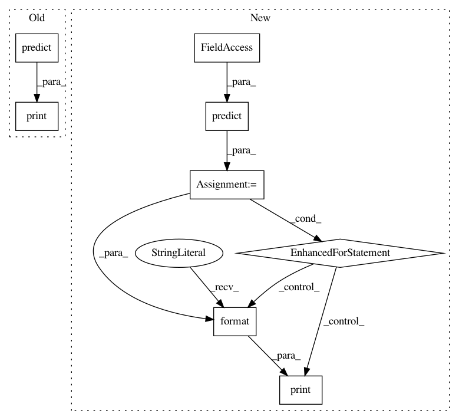

39b587f1aef21060878707696d4e7251d72cd22b,examples/face_recognition_knn.py,,,#,147
Before Change
if __name__ == "__main__":
knn_clf = train("knn_examples/train")
for img_path in listdir("knn_examples/test"):
preds = predict(join("knn_examples/test", img_path) ,knn_clf=knn_clf)
print(preds)
draw_preds(join("knn_examples/test", img_path), preds)
After Change
// Find all people in the image using a trained classifier model
// Note: You can pass in either a classifier file name or a classifier model instance
predictions = predict(full_file_path, model_path="trained_knn_model.clf")
// Print results on the console
for name, (top, right, bottom, left) in predictions:
print("- Found {} at ({}, {})".format(name, left, top))
// Display results overlaid on an image
show_prediction_labels_on_image(os.path.join("knn_examples/test", image_file), predictions)
In pattern: SUPERPATTERN
Frequency: 3
Non-data size: 8
Instances
Project Name: ageitgey/face_recognition
Commit Name: 39b587f1aef21060878707696d4e7251d72cd22b
Time: 2018-03-05
Author: ageitgey@gmail.com
File Name: examples/face_recognition_knn.py
Class Name:
Method Name:
Project Name: dpressel/mead-baseline
Commit Name: bfddcc3d4b2a4f8c977c5cb1eca2a9589357062d
Time: 2019-02-05
Author: sagnik1987@gmail.com
File Name: api-examples/classify-text.py
Class Name:
Method Name:
Project Name: dpressel/mead-baseline
Commit Name: bfddcc3d4b2a4f8c977c5cb1eca2a9589357062d
Time: 2019-02-05
Author: sagnik1987@gmail.com
File Name: api-examples/tag-text.py
Class Name:
Method Name: